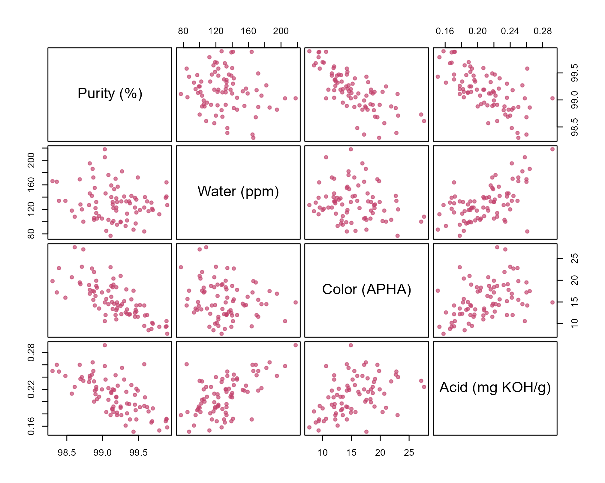
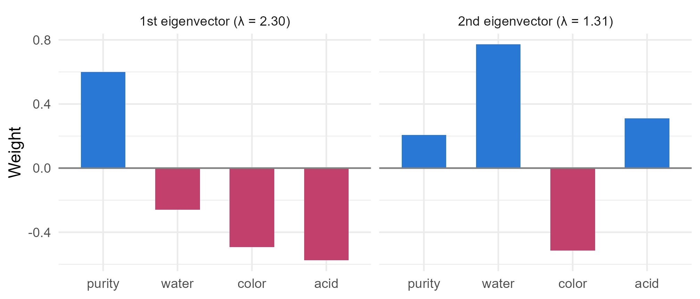

Module 3 · Lesson 1 of 13 Week 47 of 160 About 5–7 hours
Multivariate data and matrix algebra
Mean vectors, covariance matrices, and what happens when you combine variables
Organize several measurements per unit as a data matrix, summarize it with a mean vector, a covariance matrix and a correlation matrix, compute the mean and variance of any linear combination, measure total and generalized variance, and read the eigenvalues and eigenvectors of a covariance or correlation matrix.
The customer’s specification for our product doesn’t have one number on it. It has four: the purity, the water content, the color and the acid value. Every batch gets all four measured, and a batch is only good if all four are good. So far in this course, we’ve analyzed one response at a time. This module is about analyzing several together, which answers questions that one-at-a-time analyses get wrong: is this batch unusual as a whole? Is the product on target on all four properties at once? Which properties really tell two suppliers apart?
The first step is the language: vectors and matrices, which you met in Lessons 0.14 and 2.4. This lesson puts them to work describing multivariate data.
Welcome to Module 3! One response was fun. Four at once is a party. Let’s meet the guests, and see how they get along with each other!
In this lesson you’ll:
- organize multivariate data as a data matrix
- summarize it with a mean vector, a covariance matrix and a correlation matrix
- compute the mean and variance of any linear combination of the variables
- measure the total and the generalized variance
- read the eigenvalues and eigenvectors of a correlation matrix
Four properties per batch
The data are last quarter’s 80 batches from the full-scale plant. For each batch, they record a few process conditions, and the four properties on the customer’s specification sheet:
quality <- read_csv("data/batch_quality.csv", show_col_types = FALSE)
head(quality)
#> # A tibble: 6 × 9
#> batch_id temp_C residence_min feed_water_ppm catalyst purity_pct water_ppm
#> <chr> <dbl> <dbl> <dbl> <chr> <dbl> <dbl>
#> 1 FS01 181. 36.4 321 B 99.0 205
#> 2 FS02 191. 48.2 196 B 99.2 122
#> 3 FS03 176. 62.8 275 A 99.3 133
#> 4 FS04 179. 62.5 329 B 99.1 176
#> 5 FS05 175. 52.3 190 A 99.6 133
#> 6 FS06 184. 52.1 207 B 99.2 118
#> # ℹ 2 more variables: color_apha <dbl>, acid_mgKOH <dbl>| Column | What it is |
|---|---|
purity_pct |
the product’s purity, % |
water_ppm |
its water content, ppm |
color_apha |
its color on the APHA (Hazen) scale: 0 is water-white, and higher is yellower |
acid_mgKOH |
its acid value: mg of potassium hydroxide needed to neutralize the acid in 1 g |
The process columns (temp_C, residence_min, feed_water_ppm and catalyst) will matter in Lessons 11 and 12. For now, take the four properties. Arranged with one row per batch and one column per property, they form the data matrix:
X = \begin{pmatrix} x_{11} & x_{12} & \cdots & x_{1p} \\ x_{21} & x_{22} & \cdots & x_{2p} \\ \vdots & & & \vdots \\ x_{n1} & x_{n2} & \cdots & x_{np} \end{pmatrix}, \qquad n = 80 \text{ batches}, \quad p = 4 \text{ variables.}
Row i, written \mathbf{x}_i, is batch i’s observation vector: four numbers that belong together. Here’s every pair of variables at once:
Y <- as.matrix(quality[, c("purity_pct", "water_ppm", "color_apha", "acid_mgKOH")])
pairs(Y, pch = 19, cex = 0.8, col = adjustcolor("#C2416C", 0.65), gap = 0.4,
labels = c("Purity (%)", "Water (ppm)", "Color (APHA)", "Acid (mg KOH/g)"))
The properties aren’t independent of each other. Purer batches are paler and less acidic. Wetter batches are more acidic, because water hydrolyzes the product into acid. Those relationships are part of the data, and multivariate methods use them.
The mean vector
The mean vector collects the four means:
\bar{\mathbf{x}} = \begin{pmatrix} \bar{x}_1 \\ \vdots \\ \bar{x}_p \end{pmatrix} = \frac{1}{n} X^\top \mathbf{1},
where \mathbf{1} is a column of n ones: multiplying by it adds up each column. It’s the “center of the cloud” in four-dimensional space.
Your turn. The matrix Y holds the four properties. Compute the mean vector.
colMeans() averages each column of a matrix.
colMeans(Y)The average batch is 99.17% pure, with 131 ppm of water, a color of 15.4 APHA and an acid value of 0.210 mg KOH/g.
Covariance and correlation matrices
The covariance matrix collects every variance and covariance:
S = \frac{1}{n - 1} \sum_{i=1}^{n} (\mathbf{x}_i - \bar{\mathbf{x}})(\mathbf{x}_i - \bar{\mathbf{x}})^\top = \frac{1}{n - 1}\, X_c^\top X_c ,
where X_c is the centered data matrix (Lesson 0.14). It’s p \times p and symmetric: the variance of variable j is on the diagonal at s_{jj}, and the covariance of variables j and k is at s_{jk} (and s_{kj}).
S <- cov(Y)
S
#> purity_pct water_ppm color_apha acid_mgKOH
#> purity_pct 0.134454035 -1.5689636 -1.15469225 -0.0072952690
#> water_ppm -1.568963608 816.2897152 -21.41466772 0.5053313291
#> color_apha -1.154692247 -21.4146677 17.92753006 0.0540924367
#> acid_mgKOH -0.007295269 0.5053313 0.05409244 0.0009221259Covariances are hard to read, because each one carries the units of two variables: the covariance of purity and water is in “%·ppm”. The correlation matrix removes the units. Divide each covariance by the two standard deviations, r_{jk} = s_{jk}/\sqrt{s_{jj}s_{kk}}. In matrix form, with D the diagonal matrix of the variances,
R = D^{-1/2}\, S\, D^{-1/2} .
D^{-1/2} is diagonal with entries 1/s_j, so multiplying on the left scales the rows and multiplying on the right scales the columns.
round(cor(Y), 2)
#> purity_pct water_ppm color_apha acid_mgKOH
#> purity_pct 1.00 -0.15 -0.74 -0.66
#> water_ppm -0.15 1.00 -0.18 0.58
#> color_apha -0.74 -0.18 1.00 0.42
#> acid_mgKOH -0.66 0.58 0.42 1.00The strongest relationships: purity with color (r = -0.74) and with acid (-0.66), and water with acid (0.58).
Your turn. Compute the correlation matrix from S with the matrix formula, and check that it matches cor(Y).
Multiply by D_half_inv on both sides.
D_half_inv <- diag(1 / sqrt(diag(S)))
R_mine <- D_half_inv %*% S %*% D_half_inv
max(abs(R_mine - cor(Y)))The largest difference is around 10^{-16}: the same matrix, up to rounding. (cov2cor(S) does the same in one step.)
Linear combinations
Many useful quantities are weighted sums of the variables. For instance, the customer’s contract caps the total impurity, in percent: everything that isn’t product, which is 100 - \text{purity} plus the water converted from ppm to percent:
\text{total impurity} = 100 - x_1 + 0.0001\,x_2 .
Apart from the constant, that’s \mathbf{a}^\top\mathbf{x} with \mathbf{a} = (-1, 0.0001, 0, 0). Any linear combination has a simple mean and variance:
\text{mean of } \mathbf{a}^\top\mathbf{x} = \mathbf{a}^\top \bar{\mathbf{x}}, \qquad \text{variance of } \mathbf{a}^\top\mathbf{x} = \mathbf{a}^\top S\, \mathbf{a} = \sum_j \sum_k a_j a_k s_{jk} .
The variance formula includes every covariance, not just the variances, and that’s where correlated variables matter: the variance of a sum of positively correlated variables is bigger than the sum of their variances. The covariance between two combinations, \mathbf{a}^\top\mathbf{x} and \mathbf{b}^\top\mathbf{x}, is \mathbf{a}^\top S\,\mathbf{b}. These two formulas run through the whole module.
NoteGo deeper: why the variance is \mathbf{a}^\top S \mathbf{a}
For one observation, \mathbf{a}^\top\mathbf{x}_i - \mathbf{a}^\top\bar{\mathbf{x}} = \mathbf{a}^\top(\mathbf{x}_i - \bar{\mathbf{x}}). Squaring a number is multiplying it by itself, and since a number equals its own transpose,
\left(\mathbf{a}^\top(\mathbf{x}_i - \bar{\mathbf{x}})\right)^2 = \mathbf{a}^\top(\mathbf{x}_i - \bar{\mathbf{x}})(\mathbf{x}_i - \bar{\mathbf{x}})^\top\mathbf{a} .
Add these up over the observations and divide by n - 1: the middle part becomes S. The same steps give \mathbf{a}^\top S\,\mathbf{b} for a covariance. And since a variance can’t be negative, \mathbf{a}^\top S\,\mathbf{a} \ge 0 for every \mathbf{a}: a covariance matrix is always positive semi-definite. When no combination of the variables is constant, it’s strictly positive, and S is positive definite, which is what lets us invert it.
Your turn. Compute the variance of the total impurity with the formula \mathbf{a}^\top S\,\mathbf{a}.
The same vector goes on both sides: t(a) %*% S %*% a.
a <- c(-1, 0.0001, 0, 0)
t(a) %*% S %*% a0.1348, a standard deviation of 0.37 percentage points. Check it with var(100 - Y[, 1] + 0.0001 * Y[, 2]). Almost all of it is the purity’s own variance (0.1345): the water term is tiny in percent. But not quite all: purity and water are negatively correlated, and \mathbf{a} gives them opposite signs, so their covariance adds a little to the variance.
Your turn. The color isn’t part of the total impurity, but the two are related. Compute their covariance with \mathbf{a}^\top S\,\mathbf{b}, where \mathbf{b} picks out the color.
The color is the third variable, so \mathbf{b} = (0, 0, 1, 0).
a <- c(-1, 0.0001, 0, 0)
b <- c(0, 0, 1, 0)
t(a) %*% S %*% b1.15: batches with more impurity tend to be yellower, which makes sense, since both come from the same side reactions.
Total and generalized variance
Sometimes you want a single number for the spread of the whole cloud. There are two common ones:
- The total variance is the sum of the variances, the trace of S: \text{tr}(S) = \sum_j s_{jj}. Here it’s 834, and 816 of that is the water’s, simply because water is measured in ppm, where numbers are big. The total variance depends completely on the units, so it only makes sense when the variables share them.
- The generalized variance is the determinant, |S|. It measures the volume of the cloud, and it accounts for the correlations: strongly correlated variables squash the cloud into a thinner shape, with less volume. On the correlation scale, |R| runs from 1 (all the variables uncorrelated) to 0 (some variable is a perfect combination of the others, the perfect collinearity of Lesson 2.11).
For two variables, |R| = 1 - r^2, so it’s a direct measure of how much the pair overlaps. For all four properties, |R| = 0.11: the four measurements carry a lot of shared information.
Your turn. Compute |R| for all four properties, and for water and acid alone.
Pick the same rows and columns: R[c(2, 4), c(2, 4)].
c(all_four = det(R), water_acid = det(R[c(2, 4), c(2, 4)]))0.111 for all four, and 0.661 for water and acid, which is exactly 1 - 0.582^2.
Eigenvalues and eigenvectors
Lesson 0.14 showed that the eigenvectors of a correlation matrix point along the directions in which the data spread out, and that the eigenvalues are the variances in those directions. Every covariance or correlation matrix can be rebuilt from them, by the spectral decomposition:
R = P \Lambda P^\top = \sum_{j=1}^{p} \lambda_j\, \mathbf{e}_j \mathbf{e}_j^\top ,
where the columns of P are the eigenvectors \mathbf{e}_j (each of length 1, and at right angles to the others) and \Lambda is the diagonal matrix of the eigenvalues. The eigenvalues are never negative, and they add up to the total variance: for R, that’s p = 4.
e <- eigen(cor(Y))
e$values
#> [1] 2.3044267 1.3117847 0.1946988 0.1890898
round(e$vectors, 2)
#> [,1] [,2] [,3] [,4]
#> [1,] 0.60 0.21 0.64 -0.43
#> [2,] -0.26 0.77 -0.33 -0.48
#> [3,] -0.49 -0.52 0.17 -0.68
#> [4,] -0.58 0.31 0.67 0.35tibble(property = rep(c("purity", "water", "color", "acid"), 2),
direction = rep(c("1st eigenvector (λ = 2.30)", "2nd eigenvector (λ = 1.31)"), each = 4),
weight = c(e$vectors[, 1], e$vectors[, 2])) |>
mutate(property = factor(property, levels = c("purity", "water", "color", "acid"))) |>
ggplot(aes(x = property, y = weight, fill = weight > 0)) +
geom_col(width = 0.6, show.legend = FALSE) +
geom_hline(yintercept = 0, color = "grey50") +
scale_fill_manual(values = c(`TRUE` = "#2a78d6", `FALSE` = "#C2416C")) +
facet_wrap(~ direction) +
labs(x = NULL, y = "Weight") +
theme_minimal(base_size = 12)
The two biggest eigenvalues, 2.30 and 1.31, account for (2.30 + 1.31)/4 = 90\% of the total variance. So the four properties really vary along about two directions, and each one has a chemical meaning:
- The first contrasts purity (positive) with color and acid (negative): batches are either pure, pale and low in acid, or impure, yellow and acidic. That’s the signature of thermal degradation, which makes colored, acidic by-products.
- The second is mostly water, with acid going the same way and color the opposite way: wetter batches are more acidic, and paler. That’s hydrolysis (water makes acid), mixed with the residence time: short runs leave the product wetter, but give it less time to darken.
The last two eigenvalues are small, about 0.19 each. Very little happens in those directions: for example, the four properties hardly ever all rise together. (The signs of an eigenvector are arbitrary: -\mathbf{e} is just as good an eigenvector as \mathbf{e}, so read the pattern of the signs, not the signs themselves.) Using these directions as new variables is called principal components analysis, which Module 7 covers.
Why the correlation matrix and not S? Do it with S, and the first eigenvector is almost pure water, with 98% of the “variance”: the ppm units drown everything else out. As with the total variance, when the variables have different units, standardize first.
Your turn. What fraction of the total variance does each eigenvalue of R account for?
The eigenvalues of a correlation matrix add up to the number of variables, sum(ev), which is 4.
ev <- eigen(R)$values
ev / sum(ev)58%, 33%, 5% and 5%. Two directions carry 90% of the variation.
Challenge round
Challenge 1 · Units change the total variance. Convert the water from ppm to percent (divide by 10,000), and recompute the total variance of the four properties. What happens?
Compute the covariance matrix of the converted data, cov(Y_pct).
Y_pct <- Y
Y_pct[, "water_ppm"] <- Y_pct[, "water_ppm"] / 10000
c(ppm = sum(diag(cov(Y))), percent = sum(diag(cov(Y_pct))))From 834 down to 18. The data didn’t change, only the units, and now the color dominates instead of the water. Any summary that adds up variances across variables, including the eigen-analysis of S, inherits this. The correlation matrix doesn’t: it’s the same in any units.
Challenge 2 · An inverse from eigenvalues. The spectral decomposition makes functions of a matrix easy: R^{-1} = P \Lambda^{-1} P^\top, because inverting \Lambda just inverts each eigenvalue. Build R^{-1} that way, and compare it with solve(R). (Next lesson’s Mahalanobis distance uses the inverse of a covariance matrix.)
Invert the eigenvalues, e$values.
e <- eigen(R)
P <- e$vectors
R_inv <- P %*% diag(1 / e$values) %*% t(P)
max(abs(R_inv - solve(R)))A difference of about 10^{-15}: the same matrix. Notice what this says about small eigenvalues: 1/\lambda is large when \lambda is small, so the inverse greatly magnifies the directions in which the data hardly vary. Keep that in mind for the next lesson.
Quick quiz
1. In a data matrix with 80 batches and 4 properties, what is a row?
Rows are units (batches), and columns are variables (properties).
2. What’s on the diagonal of a covariance matrix?
The diagonal of S holds the variances, and the off-diagonal entries hold the covariances. A correlation matrix has 1s on its diagonal.
3. What’s the variance of the linear combination \mathbf{a}^\top\mathbf{x}?
\mathbf{a}^\top S\,\mathbf{a} = \sum_j\sum_k a_j a_k s_{jk}. Ignoring the covariances is only right when the variables are uncorrelated.
4. Why is the total variance \text{tr}(S) a poor summary for the four properties?
Changing the water from ppm to percent cut it from 834 to 18. Standardize first, or use the correlation matrix.
5. For two variables, the determinant of their correlation matrix is 1 - r^2. What does |R| = 0 mean?
A determinant of zero means the matrix has no inverse: perfect collinearity, as in Lesson 2.11.
6. The first eigenvector of R has weights +0.60, -0.26, -0.49, -0.58 for purity, water, color and acid. What does it describe?
Purity goes one way, and color and acid the other. It’s the direction of thermal degradation, and it carries 58% of the variance.
Wrap-up
You can now describe multivariate data in the language of matrices! Here’s what you’ve learned:
- The data matrix X has one row per unit (an observation vector) and one column per variable.
- The mean vector \bar{\mathbf{x}} (
colMeans()) is the center of the cloud. - The covariance matrix S (
cov()) holds the variances and covariances. The correlation matrix R = D^{-1/2} S D^{-1/2} (cor(),cov2cor()) removes the units. - Linear combinations: \mathbf{a}^\top\mathbf{x} has mean \mathbf{a}^\top\bar{\mathbf{x}} and variance \mathbf{a}^\top S\,\mathbf{a}, and two combinations have covariance \mathbf{a}^\top S\,\mathbf{b}.
- Total variance \text{tr}(S) depends on the units. Generalized variance |S| measures the cloud’s volume, and |R| runs from 1 (uncorrelated) to 0 (redundant).
- Eigen-decomposition: R = P\Lambda P^\top. The eigenvectors are the directions of spread, and the eigenvalues the variances along them. For the four properties, two directions, thermal degradation and hydrolysis, carry 90% of the variance.
TipPractice in RStudio (optional, about an hour)
Download batch_quality.csv into your project’s data-raw/ folder.
- A nicer scatterplot matrix. Install the GGally package and run
GGally::ggpairs(quality, columns = c("purity_pct", "water_ppm", "color_apha", "acid_mgKOH")). It shows the scatterplots, the correlations and each variable’s distribution at once. - Covariance by hand. Compute S from the formula X_c^\top X_c/(n - 1), with
scale(Y, scale = FALSE)for X_c, and check it againstcov(Y). - Mixing units. Convert the purity to an impurity in ppm, 10^4 \times (100 - \text{purity}), and redo the eigen-analysis of S. Which variable dominates now? What about the eigen-analysis of R?
- The two directions as scores. Compute each batch’s coordinates along the first two eigenvectors of R:
scale(Y) %*% e$vectors[, 1:2]. Plot them against each other. Which batches are the most degraded, and which are the wettest?
NoteKey words from this lesson
- Data matrix
- An n \times p array with one row per unit and one column per variable.
- Observation vector
- One unit’s measurements on all p variables: a row of the data matrix.
- Mean vector
- The vector of the p variables’ means.
- Covariance matrix
- The p \times p matrix of variances (on the diagonal) and covariances (off the diagonal).
- Correlation matrix
- The covariance matrix of the standardized variables, with 1s on the diagonal.
- Linear combination
- A weighted sum of the variables, \mathbf{a}^\top\mathbf{x}, with mean \mathbf{a}^\top\bar{\mathbf{x}} and variance \mathbf{a}^\top S\mathbf{a}.
- Total and generalized variance
- The trace \text{tr}(S), the sum of the variances, and the determinant |S|, a measure of the volume of the data cloud.
- Positive definite
- A matrix S with \mathbf{a}^\top S\mathbf{a} > 0 for every non-zero \mathbf{a}, like any covariance matrix in which no combination of the variables is constant.
- Spectral decomposition
- Writing a symmetric matrix as P\Lambda P^\top, from its eigenvectors and eigenvalues.
NoteWant to read more?
- Penn State STAT 505, Lesson 1: Measures of Central Tendency, Dispersion and Association and Lesson 2: Linear Combinations of Random Variables. The same ideas, with clear worked examples.
- Richard Johnson and Dean Wichern, Applied Multivariate Statistical Analysis (6th edition), chapters 1 to 3. The standard textbook for this course. Chapter 2 is a compact review of the matrix algebra.
- Essence of Linear Algebra (3Blue1Brown videos), “Eigenvectors and eigenvalues”. The geometry of eigenvectors, beautifully animated.